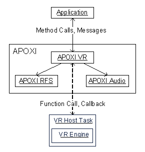

Voice Recognition Overview
1 Introduction
APOXI Voice Recognition (VR) module provides an object oriented interface for APOXI applications and APOXI core modules to use Voice Recognition.
2 Overview
With APOXI VR, applications can start voice recognition for commands they need and train speaker dependent commands. APOXI VR is also used for managing the commands.
An overview of the VR system is given in the following dependency diagram (Figure 1).
 |
Figure 1. VR Dependency Diagram
APOXI VR and the VR Host Task communication is done by using a function call from APOXI VR to VR. A callback registered by APOXI VR with VR which is called by VR whenever it wants to send data to APOXI VR.
APOXI VR is also responsible for allocating and freeing the audio device used for recording speech. This has to be done in APOXI VR because the APOXI audio priority mechanisms must not be disturbed by VR Host and VR Engine.
For storing the templates used by the VR Engine for recognition, APOXI VR makes use of the Root File System. By using the RFS, the storing of template data can be done using various medias like FFS, Memory Cards, etc.
3 Features of Voice Recognition
APOXI VR provides:Accessibility for APOXI modules and APOXI-based applications
3.1 VR Templates
A VR template represents a voice tag for a command (e.g. name for dialing a phonebook entry, menu item, etc.). For each recognition process, the VR engine is fed with a set of VR templates to tell the engine, what it should listen for. Depending on the used recognition mode, one or more of the VR templates will be recognized.
There are three types of templates:
3.2 Start voice recognition
An application can start voice recognition with a set of templates, of which one or more shall be recognized. The application will be informed which of the templates has been recognized. If necessary it is possible to abort voice recognition when conflicts with other functions occur (e.g. an incoming call overrides voice recognition).
3.3 Train speaker dependent templates
An application can do training for a speaker-dependent command (e.g. name-dialing). The recorded template is stored in the system and can be used by the application until it decides to discard the template. If necessary it is possible to abort training when conflicts with other tasks occur (e.g. an incoming call overrides training).
3.4 Create speaker independent templates
A speaker-independent template based on an ASCII-string can be created by an application if G2A is provided by the VR Engine. The template is stored in the system and can be used by the application until it decides to discard the template.
4 Class architecture
The main class for APOXI VR are VrHandler. These class handle the communication between MMI and APOXI VR as well as between APOXI VR and VR Host Task.
The other important classes in APOXI VR are message classes, which are used to transport information from the VR Engine to MMI.